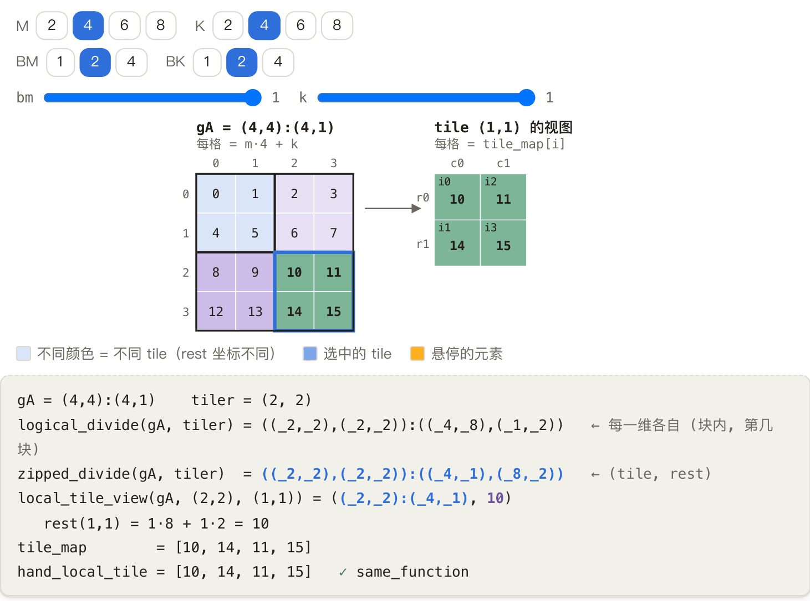
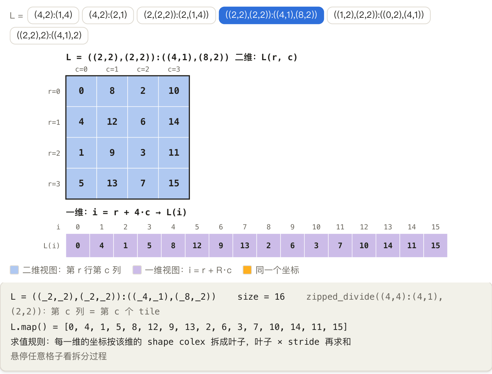
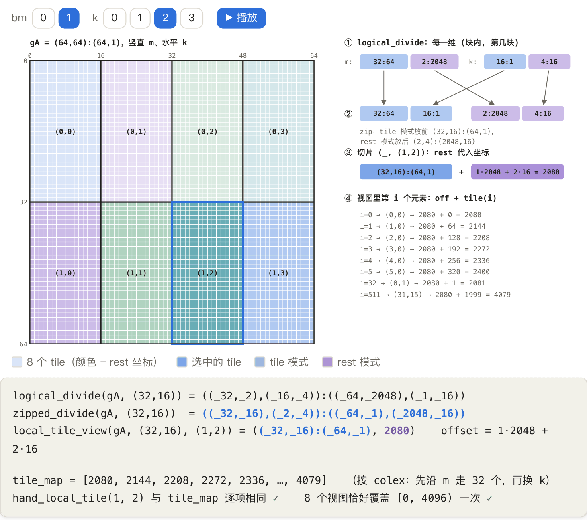
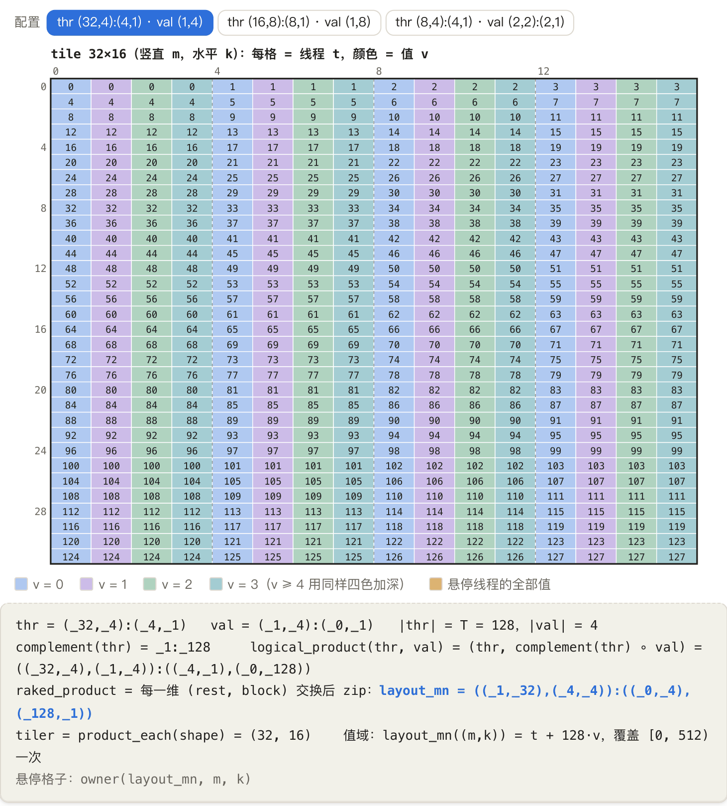
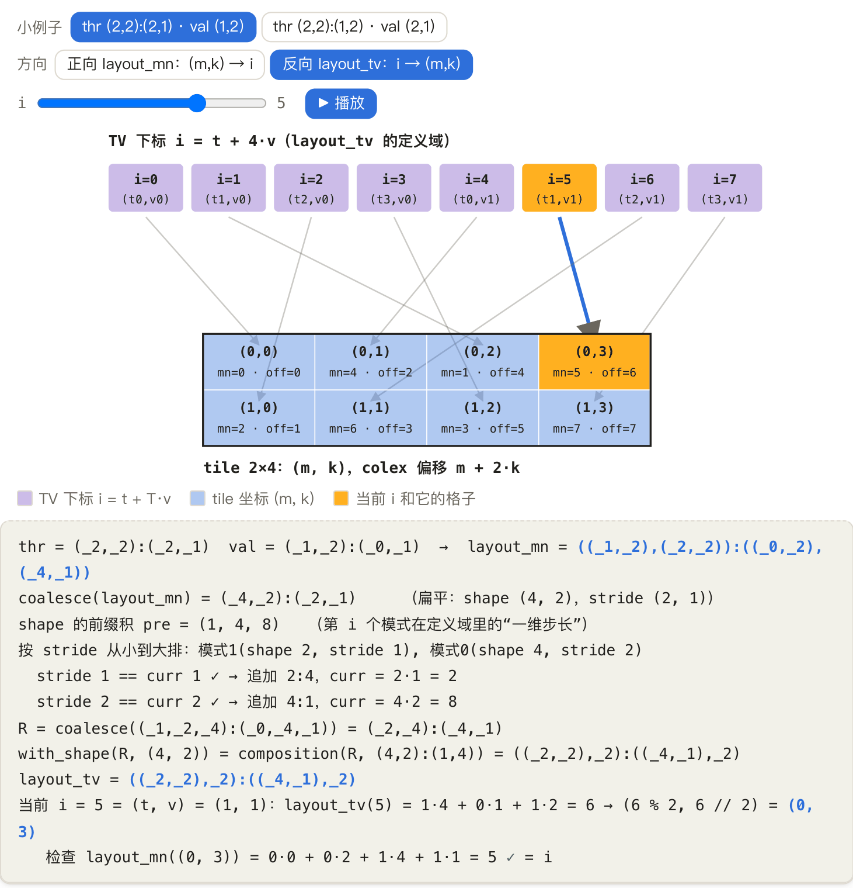
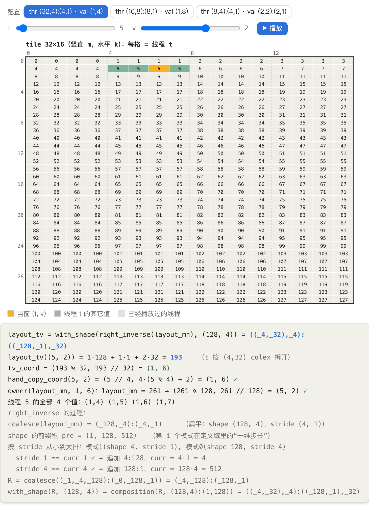
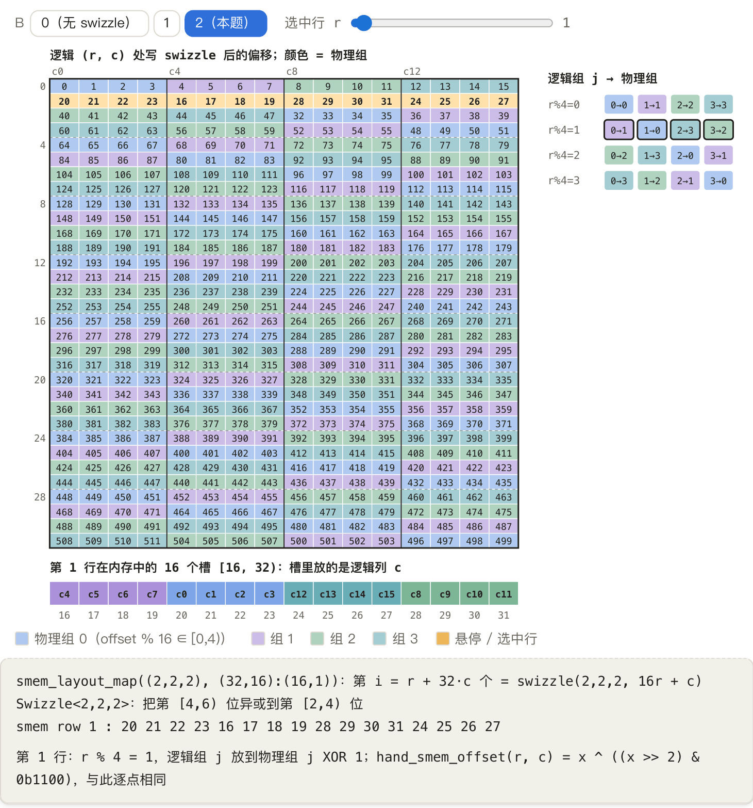

B1 · 用 Layout Algebra 重写 Track A：zipped_divide、raked_product + right_inverse、Swizzle ∘ Layout
Track A 用手写公式回答了“CTA 拿哪块、线程搬哪些、SMEM 放哪里”。CuTe 不写这些公式，而是用 Layout Algebra 把它们构造出来：local_tile 是 zipped_divide 加切片，Copy TV 是 raked_product 的 right_inverse，SMEM 是 Swizzle 和普通 layout 的 composition。本题用和真实 CuTe 逐字符一致的 Python 代数写出这三个构造，并证明它们和 Track A 的手写公式是同一个函数。
文件: mine/b1_algebra_rewrite.py 你的代码 · tests/test_b1_algebra_rewrite.py 测试 · solutions/b1_algebra_rewrite.py 参考解
题面速览
- 背景知识：Layout Algebra 与编译 的代数操作表。
- 在体系里的位置：
local_tile的定义就是zipped_divide再切片（local_tile、zipped_divide）。make_tiled_copy的前三行：layout_mn = raked_product(thr_layout, val_layout)，layout_tv = right_inverse(layout_mn).with_shape(...)（make_tiled_copy、raked_product、right_inverse）。- swizzle 过的 SMEM layout 是
composition(Swizzle<2,2,2>{}, layout)（Swizzle）。
- 你要实现：
local_tile_view、tile_map、hand_local_tile、make_layout_tv、tv_coord、owner、hand_copy_coord、smem_layout_map、hand_smem_offset、same_function。整套 Python CuTe 代数（Layout、composition、complement、coalesce、zipped_divide、raked_product、right_inverse、with_shape、swizzle…）已经给出。 - 关键规则：
zipped_divide(gA, (32,16)) = ((tile), (rest))：第 0 个模式是 tile 内，第 1 个模式是“第几个 tile”。切片(_, coord)得到 tile 的 layout 和一个常数偏移rest(coord)。raked_product(thr, val)的定义域是 tile 坐标 (m, k)，值是 TV 下标t + 128·v；它的right_inverse才是 (t, v) → tile 坐标。with_shape(L, s) = composition(L, Layout(s))：只改定义域的形状，不改函数。- tile 坐标的一维偏移按 colex：
m + 32·k。
验收要点：given 的代数核心在 8 个表达式上和真实 CuTe 的打印逐字符相同（这几条从一开始就通过）· (1,2) 的 tile layout 与偏移和真实 local_tile 相同 · 8 个 (bm, k) 的偏移与真实 rest 模式相同 · 代数版与手写公式相同 · 8 个视图恰好覆盖 A 一次 · 四种 thr/val 的 layout_mn、layout_tv、tiler 与真实 CuTe 逐字符相同，取值表相同 · layout_mn ∘ layout_tv 是恒等 · tv_coord 与手写 (t//4, 4(t%4)+v) 是同一个函数 · owner 是 copy 的逆 · SMEM 映射与真实 Sw<2,2,2> o _0 o (_32,_16):(_16,_1) 相同 · 手写位运算与之相同 · same_function 能发现差异。
- zipped_divide：
logical_divide之后把各维的“tile 内”模式拼成第 0 个模式、“tile 编号”模式拼成第 1 个模式。 - raked_product：把 val 的每一维插到 thr 对应维的内侧，线程和值交错排列（rake = 耙子：齿和齿之间有空隙）。
- right_inverse(L)：满足
L(R(i)) = i的 layout，CuTe 通过对 stride 排序构造它。 - ComposedLayout：
Sw<2,2,2> o _0 o L读作“先算 L，加偏移 0，再做 swizzle”。
直觉与类比
Track A 像是手写了一份音乐会的座位表：“第 5 排第 3 座给谁”。代数的写法是给出生成规则：“把大厅按 32×16 的区块切开”（divide）、“每 4 个连号座位给一个人，人沿着排先坐满”（raked_product 再取逆）、“每排的座位号按排号的两位打乱”（composition 一个 swizzle）。生成规则可以和别的规则拼接、化简、编译期检查；而同一个大厅、同一批人，两种写法得到的座位表必须一模一样，这一题就是在逐个座位核对。
图解：三个构造
从小例子开始：先在草稿纸上手算
这一题的三个构造（divide、product + inverse、swizzle）都是“对 layout 做运算”。直接看 64×64、128 个线程会被数字淹没。先拿一个小到每个格子都能写出来的 layout 把每个运算手算一遍，再换成测试里的尺寸（数字变大，步骤一模一样），最后写成一般公式。下面的草稿纸就是你自己推这道题时应该写下的东西。
① 小：8 个元素的 layout
一维 8:1 切成 4 个一块；二维 (4,4):(4,1) 切成 2×2 的块；4 个线程、每人 2 个值；一行 16 个元素做 swizzle。每个数都能手写。
logical_divide(8:1, 4) = (4,2):(1,4)
zipped_divide((4,4):(4,1), (2,2))
= ((2,2),(2,2)):((4,1),(8,2))
thr (2,2):(2,1) · val (1,2) → tile (2,4)
② 测试的尺寸
同样的四步，只是数字变大。
zipped_divide((64,64):(64,1), (32,16))
= ((32,16),(2,4)):((64,1),(2048,16))
layout_tv = ((4,32),4):((128,1),32)
Sw<2,2,2>：(1,0) → 20
③ 换一组 thr / val
测试 test_make_layout_tv_generalizes 换两组配置，代数不变，只有 stride 跟着变。
(8,4):(4,1) · (2,2):(2,1) → tile (16,8)
layout_tv = ((4,8),(2,2)):((32,2),
(16,1))
④ 一般从 ①–③ 里看出来的规律。
tile 的偏移 = Σ 块号 · (块大小 · 原 stride)
TV = 把 (m,k) → t + T·v 这个双射倒过来
swizzle：c' = c XOR 4·(r % 4)（一次换 4
个）
✎ 草稿纸 1：layout 是一个函数，divide 只是把下标重新分组
0) 先会求值。L = (4,2):(1,4)：坐标 (r, c) → r·1 + c·4
(2,1) → 2·1 + 1·4 = 6
也可以喂一个整数 i：先按 colex 拆成坐标 (i % 4, i // 4)，再求值
i = 6 → (2, 1) → 6 L.map() = [0,1,2,3,4,5,6,7]
换 stride：(4,2):(2,1) 的 (2,1) → 2·2 + 1·1 = 5 map = [0,2,4,6,1,3,5,7]
1) 一维 divide：logical_divide(8:1, 4)
tiler 4:1 走过 {0,1,2,3}
complement(4:1, 8) = 2:4 ← “tile 没碰到的部分”怎么走：下一块从 4 开始
make_layout(4:1, 2:4) = (4,2):(1,4)
8:1 ∘ (4,2):(1,4) = (4,2):(1,4) ← 第 0 维 = 块内，第 1 维 = 第几块
tiler 换成 2:2（隔一个取一个）：
complement(2:2, 8) = (2,2):(1,4)
logical_divide(8:1, 2:2) = (2,(2,2)):(2,(1,4)) map = [0,2 | 1,3 | 4,6 | 5,7] → 第 0 块 {0,2}、第 1 块 {1,3}、第 2 块 {4,6}、第 3 块 {5,7}
2) 二维：g = (4,4):(4,1)（行主序，和 gA 一样 K 连续），tiler (2,2)，按模式各切各的
第 0 维 4:4 ÷ 2 → 4:4 ∘ (2:1, complement(2:1, 4) = 2:2) = (2,2):(4,8)
第 1 维 4:1 ÷ 2 → (2,2):(1,2)
logical_divide = ((2,2),(2,2)):((4,8),(1,2)) ← 每一维是 (块内, 第几块)
zip：把两个“块内”放一起，两个“第几块”放一起
zipped_divide = ((2,2),(2,2)):((4,1),(8,2)) ← (tile, rest)
3) 切片 (_, (1,1))：tile 模式保留，rest 模式代入坐标
rest(1,1) = 1·8 + 1·2 = 10 tile = (2,2):(4,1)
local_tile_view(g, (2,2), (1,1)) = ((_2,_2):(_4,_1), 10)
tile_map = [10+0, 10+4, 10+1, 10+5] = [10, 14, 11, 15]
手写 (2·1 + r)·4 + 2·1 + c：(0,0)→10 (1,0)→14 (0,1)→11 (1,1)→15 ✓ 同一个函数
✎ 草稿纸 2：Copy TV = raked_product 再取逆；SMEM = swizzle 一下偏移
4) thr = (2,2):(2,1)（4 个线程排成 2×2，行主序），val = (1,2)（每人一行里 2 个相邻值）
complement(thr) = _1:_4 ← thr 占满 [0,4)，下一份从 4 开始
logical_product = (thr, complement(thr) ∘ val) = ((2,2),(1,2)):((2,1),(0,4))
raked = 每一维 (val 在内侧, thr 在外侧)：
layout_mn = ((1,2),(2,2)):((0,2),(4,1)) tiler = (1·2, 2·2) = (2, 4)
layout_mn 的值表（值 i = t + 4·v）：
k=0 k=1 k=2 k=3
m=0 0 4 1 5 (0,2)：m → (0,0)，k=2 → (0,1)：0·4 +
1·1 = 1
m=1 2 6 3 7 → i = 1 → t = 1 % 4 = 1，v = 1 // 4 =
0
读法：线程 1 的两个值在 (0,2)、(0,3)；手写 (t // 2, 2·(t % 2) + v) 也给出这两个
5) right_inverse(layout_mn)：
coalesce → (4,2):(2,1) 前缀积 pre = (1, 4, 8)
stride 从小到大：stride 1（shape 2, pre 4）== curr 1 ✓ 追加 2:4，curr = 2
stride 2（shape 4, pre 1）== curr 2 ✓ 追加 4:1，curr = 8
R = (2,4):(4,1) 检查 layout_mn(R(1)) = layout_mn(4) = 1 ✓
with_shape(R, (4, 2)) = ((2,2),2):((4,1),2) = layout_tv
layout_tv(3, 1)：t=3 → (1,1) → 1·4 + 1·1 = 5，v=1 → 1·2 = 2，合计 7
→ (7 % 2, 7 // 2) = (1, 3)；手写 (3 // 2, 2·1 + 1) = (1, 3) ✓
6) Swizzle<2,2,2>：把第 [4,6) 位异或到第 [2,4) 位；base = 16r + c
(1,0)：x = 16 = 0b01_0000，[4,6) = 01 → 右移 2 → 0b0100 = 4，16 XOR 4 = 20
(5,7)：x = 87 = 0b101_0111，[4,6) = 01 → 4，87 XOR 4 = 83 = 16·5 + 3
(2,5)：x = 37 = 0b10_0101，[4,6) = 10 → 8，37 XOR 8 = 45 = 16·2 + 13
规律：第 [4,6) 位就是 r % 4，于是 c' = c XOR 4·(r % 4)：一行里按 4 个一组换位置
下面这张图让你随意改小尺寸的 gA 和 tiler（行主序 (M,K):(K,1) ，tiler 必须整除）。左边每格写的是 gA 的偏移 m·K + k ，颜色是它属于哪个 tile；右边是选中 tile 的视图，每格写的是 tile_map 的值，角上的小字是视图下标 i。面板打印的就是 local_tile_view / tile_map / hand_local_tile 对这组参数应该返回的东西。默认参数就是草稿纸第 2、3 步。

图解详解：三个映射怎样由代数构造出来
这些图是交互版讲解页的静态快照，显示的是默认参数下的状态。文中提到的按钮、滑块和悬停提示在这里不能操作；图上的数字和下方的文字、表格、黑底面板说的是同一组值，可以直接对照你的函数输出。
这一节把整道题画成五张可交互的图，顺序和你要写的函数一致：先确认“layout 就是坐标 → 下标的函数”（图 1），再看 local_tile_view 怎样由 zipped_divide 加切片得到（图 2），然后是 Copy TV 的两半：raked_product 给出正向表（图 3），right_inverse 把它倒过来（图 4 小例子、图 5 真实尺寸），最后是 SMEM 的 swizzle（图 6）。每张图下方的面板都把当前状态逐步代入公式，数字和参考解、真实 CuTe 的输出一致。
整道题的骨架只有下面几行，剩下的都是在验证“代数构造 == 手写公式”：
z = zipped_divide(gA, (32, 16)) # 图 2：((tile), (rest))
tile, off = z.mode(0), z.mode(1)(coord) # 切片 (_, coord)
layout_mn = raked_product(thr, val) # 图 3：(m, k) → t + 128·v
layout_tv = with_shape(right_inverse(layout_mn), (128, 4)) # 图 4/5：(t, v) → m + 32·k
smem[i] = swizzle(2, 2, 2, base(i)) # 图 6：Sw<2,2,2> ∘ (32,16):(16,1)
图 1 · Layout 就是函数：坐标 → 下标
CuTe 的 layout Shape:Stride 是一个函数：把坐标的每个分量乘上对应的 stride 再相加。坐标可以是二维的 (r, c)，也可以是一个整数 i（先按 colex，即第一维最快，拆成坐标）。嵌套的 shape（比如 (2,2) 作为一维）也照此递归拆开。左边网格每格写的是 L(r, c) ；下面一行是同一个函数按一维下标 i 排开的 L(i) ，i = r + R·c。几个预设都是本页后面会出现的 layout，先把它们“看成表”。

参考：CuTe 文档 01_layout.md （Shape、Stride、colex 下标），求值本身是 crd2idx 。
图 2 · local_tile_view ：zipped_divide 把下标重新分组，切片只剩一个偏移
gA 是 64×64 的行主序矩阵 (64,64):(64,1) 。logical_divide(gA, (32,16)) 按维各切各的：m 维变成 (32,2): (64,2048) （块内 32 行、共 2 块，下一块跳 32·64 = 2048），k 维变成 (16,4):(1,16) 。zipped_divide 再把两个“块内”模式拼成第 0 维、两个“第几块”拼成第 1 维。右边画的就是这次重新分组：数字一个没变，只是括号换了位置。最后切片 (_, (bm, k)) ：tile 模式原样保留，rest 模式代入坐标，变成一个常数偏移。
点 bm / k 换 tile，或者“▶ 播放”把 8 个 tile 走一遍。悬停左边任何一格，看它的偏移怎样拆成“tile 内 + rest”。

源码对照：logical_divide （就是 composition(layout, make_layout(tiler, complement(tiler, shape(coalesce(layout))))) 这一行）、zipped_divide （tile_unzip(logical_divide(...)) ）、complement ；tensor 版的 local_tile 只是在这之上切片。文档：02_layout_algebra.md · Division (Tiling) ，里面的 1-D / 2-D 例子和草稿纸第 1、2 步是同一类算式。
图 3 · raked_product ：正向表 (m, k) → t + 128·v
先回答“tile 里第 (m, k) 个元素由谁搬”。raked_product(thr, val) 先算 logical_product(thr, val) = (thr, complement(thr) ∘ val) ：thr 占满 [0, 128)，complement 是 _1:_128 ，所以 val 的第 v 个值被放到 128·v 。然后把每一维写成 (val 在内侧, thr 在外侧)。结果 layout_mn 的值是 i = t + 128·v 。
下图每格写的是线程号 t，颜色是 v。注意一个线程的 4 个值（4 种颜色）在 k 方向相邻，线程沿 k 每 4 列换一个、沿 m 每行跳 4 个：这就是 thr (32,4):(4,1) 的行主序排列。切换预设看另外两组配置（测试 test_make_layout_tv_generalizes ）。

源码对照：raked_product （zip(get<1>(result), get<0>(result)) ：rest 在前，所以 thr 落在外侧）、
logical_product ；文档 Blocked and Raked Products 。
图 4 · right_inverse ：把箭头倒过来（小例子）
正向表回答“(m, k) 归谁”，但 copy 需要的是反方向：“线程 t 的第 v 个值在哪”。right_inverse 就是把每条箭头反过来。用 4 个线程 × 2 个值的小例子看清楚：上面一排是 TV 下标 i = t + 4·v，下面是 tile。切到“正向”看 layout_mn 的箭头（格子 → i），切到“反向”看 layout_tv 的箭头（i → 格子）。面板一步步跑 right_inverse 的算法：coalesce、按 stride 排序、逐个拼接。

源码对照：right_inverse （注释写的就是 layout(result(i)) == i ；算法和面板里的步骤一致：coalesce → 前缀积 → 按 stride 排序 → fold）。with_shape 是 Layout::with_shape ，等于 composition(*this, make_layout(shape)) 。
图 5 · tv_coord / owner ：真实尺寸的双向查表
换回测试的 128 线程 × 4 值。选一个线程 t 和值 v，图里高亮它的 4 个格子；面板把 layout_tv((t, v)) 逐项算出来，再解码成 (m, k) = (off % 32, off // 32)，并与手写 (t // 4, 4·(t % 4) + v) 和 owner 对照。悬停任意格子，则是反方向的 owner 查询。默认状态 (5, 2) 就是测试里的 tv_coord(tv, tiler, 5, 2) == (1, 6) 。

源码对照：make_tiled_copy 的三行（raked_product → right_inverse.with_shape → product_each）就是你的 make_layout_tv 。
图 6 · smem_layout_map ：Swizzle ∘ Layout
SMEM tile 是 32×16 的行主序 (32,16):(16,1) ，先算普通偏移 x = 16r + c，再做 Swizzle<2,2,2> ：把 x 的第 [4,6) 位异或到第 [2,4) 位。因为 [4,6) 位正好是 r % 4，[2,4) 位正好是“本行第几个 4 元素组”，所以效果就是 第 r 行的 4 个组按 j → j XOR (r % 4) 换位置，组内 4 个元素的顺序不变。每格写的是 swizzle 后的偏移，颜色是它落在本行的第几个组（物理位置）。下方条带画出选中那一行在内存里的样子。切换 B = 0 看没有 swizzle 的对照（测试里的 smem_A_plain ）。

∘ (32,16):(16,1)" loading="lazy" style="width:100%;aspect-ratio:1461/1566">源码对照：Swizzle （apply 就是 offset ^ shiftr(offset & yyy_msk, msk_sft) ，头部注释画了 YY / ZZ 两组位）、composition(Swizzle, Layout) （返回 ComposedLayout ，打印成 Sw<2,2,2> o _0 o (_32,_16):(_16,_1) ）。
速查：代数构造 ↔ 手写公式
| 函数 | 代数构造 | 手写公式（Track A） | 运行例子 |
|---|---|---|---|
local_tile_view(gA, tiler, coord) |
z = zipped_divide(gA, tiler) ；返回 (z.mode(0), z.mode(1)(coord)) |
偏移 = bm·(32·64) + k·16 | (1,2) → ((_32,_16): (_64,_1), 2080) |
tile_map(L, off) |
[off + L(i) for i inrange(size)] |
— | (0,0) → [0, 64,128, …] |
hand_local_tile(bm, k) |
— | (32bm + r)·64 + 16k + c ，i = r + 32c |
与 tile_map 逐项相同 |
make_layout_tv (thr, val) |
mn = raked_product(thr, val) ；tv = with_shape(right_inverse(mn), (|thr|, |val|)) ；tiler = 每个模式的 size |
— | ((_4,_32),_4): ((_128,_1),_32)，(32, 16) |
tv_coord(tv, tiler, t, v) |
off = tv((t, v)) ；(off % 32, off // 32) |
hand_copy_coord = (t // 4, 4(t % 4) + v) |
(5, 2) → 193 → (1,6) |
owner(mn, m, k) |
i = mn((m, k)) ；(i % 128, i // 128) |
(4m + k // 4, k % 4) | (31, 15) → 511 → (127, 3) |
smem_layout_map(swz, base) |
[swizzle(B, M, S, base(i))] ，i = r + 32c |
hand_smem_offset = x ^ ((x >> 2) & 0b1100) ，x = 16r + c |
(1, 0) → 20 |
same_function( f, g, D) |
all(f(x) == g(x) for x in D) ：在整个定义域上逐点比较，而不是比较打印字符串 |
三条规律：divide = “块内 + 第几块”，块的偏移是 块号 × (块大小 × 原 stride)；TV = 先在 tile 坐标里写出容易描述的正向表，再用 right_inverse 倒过来；swizzle = 普通偏移之后再加一层位运算，粒度 2^M = 4 个元素。
逐步演示
layout_mn = ((_1,_32),(_4,_4)):((_0,_4),(_128,_1))，和真实 CuTe 相同。读法：m 方向 (1,32)，val 的 1 在内侧、thr 的 32 在外侧（stride 4，线程号 +4）；k 方向 (4,4)，val 的 4 在内侧（stride 128 = 下一个值）、thr 的 4 在外侧（stride 1 = 下一个线程）。tiler 是每个模式的 size：(32, 16)。layout_mn(31, 15) = 511，即 (t, v) = (127, 3)。
right_inverse(layout_mn) = (_4,_128):(_128,_1)：先 coalesce 成 (_128,_4):(_4,_1)，再按 stride 从小到大（1, 4）把对应的模式依次拼起来，新 stride 取该模式在定义域里的步长（前缀积 128、1）。它满足 layout_mn(R(i)) = i，测试 test_layout_tv_is_right_inverse_of_layout_mn 对全部 512 个 i 检查。
with_shape(R, (128, 4)) = ((_4,_32),_4):((_128,_1),_32)。线程模式 (4,32):(128,1)：线程号的低 2 位乘 128（列 4(t%4)，乘 tile 高度 32），高 5 位乘 1（行 t//4）。真实 get_layoutS_TV 是 ((_4,_32),(_4,_1)):((_128,_1),(_32,_0))，多一个 size 1 的模式，作为函数完全相同。
layout_tv(5, 2) = 193，193 % 32 = 1、193 // 32 = 6：线程 5 的第 2 个值是 tile 的 (1, 6)，和手写 (5 // 4, 4·(5 % 4) + 2) 一致。反过来 owner(layout_mn, 31, 15) = (127, 3)。
易错点
- 把 zipped_divide 的 rest 偏移当成 tile 编号。 切片之后剩下的是
rest(coord)这个元素偏移：(1, 2) → 2048 + 32 = 2080，不是1·4 + 2。测试test_local_tile_view_is_zipped_divide_then_slice。 - 把 raked_product 当成 TV layout。 它的定义域是 tile 坐标，方向是反的；直接拿来当 (t, v) → 坐标，线程 5 会得到错位的结果。测试
test_make_layout_tv_matches_cute。 - with_shape 写成新
Layout(shape, stride)。with_shape是 composition，stride 由代数算出来，不能手填。 - tile 偏移按行主序解码。
layout_tv的值是 colex 偏移m + 32·k。测试test_algebraic_copy_tv_equals_hand_formula。 - swizzle 异或的方向写反。 是把第 [4,6) 位异或到第 [2,4) 位：
(1, 0) → 20。测试test_algebraic_smem_equals_hand_formula。
对照文档
“因为一个高性能 kernel 中，数据要经过很多次‘重新观察’……若每一步都手写索引公式，代码会脆弱、重复，而且很难证明没有漏元素或冲突。Layout Algebra 的作用是把‘映射与映射之间的关系’变成可组合的运算。”
本题把这几句话变成了可以运行的等式：同一个映射，手写一遍、代数构造一遍，在整个定义域上逐点相等；test_local_tile_views_tile_A_exactly_once 就是文档说的“证明没有漏元素”。
上机验证
playground/run.sh playground/b1_algebra_rewrite.cpp # 真实 CuTe，本机编译运行
./check.sh oracle b1 # 重新生成 tests/golden/b1_algebra_rewrite.json
本机的真实输出：
zipped_divide(gA, (32,16)) = ((_32,_16),(_2,_4)):((_64,_1),(_2048,_16))
rest mode at (1,2) = 2080 (the tile origin of CTA row 1, k-tile 2)
raked_product(thr, val) = ((_1,_32),(_4,_4)):((_0,_4),(_128,_1))
right_inverse(...) = (_4,_128):(_128,_1)
layout_tv = ((_4,_32),_4):((_128,_1),_32)
tv(5, 0..3) = 129 161 193 225 (column-major index m + 32k in the 32x16 tile)
smem = Sw<2,2,2> o _0 o (_32,_16):(_16,_1)
given 的 Python 代数核心（Layout、composition、zipped_divide…）也在 golden 里校验过：test_given_core_matches_cute_printouts 对 8 个表达式比较真实 CuTe 的打印字符串，从一开始就会通过。
三级提示
L1I/O 例子和关键问题方向（轻度剧透）
gA = Layout((64, 64), (64, 1))
zipped_divide(gA, (32, 16)) # ((_32,_16),(_2,_4)):((_64,_1),(_2048,_16))
local_tile_view(gA, (32, 16), (1, 2)) # ((_32,_16):(_64,_1), 2080)
mn, tv, tiler = make_layout_tv(Layout((32, 4), (4, 1)), Layout((1, 4)))
tiler # (32, 16)
tv_coord(tv, tiler, 5, 2) # (1, 6)
owner(mn, 31, 15) # (127, 3)
smem_layout_map((2, 2, 2), Layout((32, 16), (16, 1)))[1] # 20（下标 1 = 坐标 (1, 0)）
关键问题
zipped_divide结果第 1 个模式的 stride(2048, 16)分别是什么意思？- 为什么
make_tiled_copy先算raked_product再取逆，而不是直接写 TV？ layout_tv和真实get_layoutS_TV打印不同，为什么测试仍然认为它们相同？
L2思路拆解与常见坑拆解与常见坑（中度剧透）
local_tile_view：z = zipped_divide(gA, tiler)；返回(z.mode(0), z.mode(1)(coord))。tile_map：[offset + L(i) for i in range(L.size())]。make_layout_tv：三行，正好对应make_tiled_copy的源码；tiler 是layout_mn.shape每个模式的乘积。tv_coord：off = layout_tv((t, v))，返回(off % tiler[0], off // tiler[0])。owner：i = layout_mn((m, k))，T是线程数（可以从layout_mn.shape里 thr 的部分读出来），返回(i % T, i // T)。smem_layout_map：对base(i)逐个调swizzle(B, M, S, ·)。same_function：all(f(x) == g(x) for x in domain)。
L3关键问题的答案几乎是答案（重度剧透）
答案
- rest 模式 (2, 4) 是 (tile 行号 bm, K tile 号 k)。stride 2048 = 32 行 × 64：下一个 CTA 行从第 32 行开始；stride 16：下一个 K tile 在同一行往右 16 个元素。
- “每线程拿 4 个连续值、线程按某种顺序排开”是在 tile 坐标空间里最容易描述的（这就是 product：把 val 这个小块按 thr 复制）。但硬件需要的是反方向：“第 t 个线程第 v 个值在哪”。
right_inverse把容易写的方向自动翻成需要的方向，并且在编译期就验证它是双射。 - 真实版本多了一个 size 1 的模式
(_4,_1):(_32,_0)，它不改变任何点的值。测试比较的是函数值（512 个点），而不是打印字符串。
参考解
✓solutions/b1_algebra_rewrite.py先自己写完、跑过测试再看
"""B1 · 用 Layout Algebra 重新表达 Track A 的三个映射：local_tile、Copy TV、SMEM swizzle — reference solution.
Track A 里我们用手写公式回答了“CTA 拿哪块”“线程搬哪些元素”“SMEM 放在哪里”。CuTe 不写这些公式，而是用
代数操作把它们**构造**出来（文档第 5 节“为什么 CuTe 需要 Layout Algebra”）：
local_tile ≡ zipped_divide(gA, tiler) 再用 (_, cta_coord) 切片 （tensor_impl.hpp local_tile）
Copy TV ≡ right_inverse(raked_product(thr, val)).with_shape(|thr|, |val|)（copy_atom.hpp make_tiled_copy）
SMEM layout ≡ composition(Swizzle<2,2,2>, (32,16):(16,1))（swizzle_layout.hpp）
这一题用 given 的 Python CuTe 代数（打印结果和真实 CuTe 逐字符一致，tests 里用 golden 校验）写出这三个构造，
再证明它们和手写公式是同一个函数。期望结果来自 oracle/b1_algebra_rewrite.cpp（真实 CuTe）。
配置
- A：(M, K) = (64, 64)，K 连续：gA = (64,64):(64,1)。CTA tiler (BM, BK) = (32, 16)。
- Copy：thr = (32,4):(4,1)，val = (1,4)（compact：(_1,_4):(_0,_1)）。
- SMEM：Swizzle<2,2,2> ∘ (32,16):(16,1)；swizzle(B, M, S, x) 是 given。
API（Layout、zipped_divide、raked_product、right_inverse、with_shape、composition、coalesce、swizzle 等都是 given）
local_tile_view(gA, tiler, coord) -> (Layout, offset)
zipped_divide(gA, tiler) = ((tile), (rest))；返回 (tile 模式的 Layout, rest模式在 coord 处的值)。
coord 是 rest 空间里的坐标 (bm, k)。例：coord (1, 2) → ((_32,_16):(_64,_1), 2048 + 32)。
tile_map(layout, offset) -> list[int] offset + layout(i)，i = 0..size-1（视图里每个元素的全局偏移）
hand_local_tile(bm, k) -> list[int] 手写公式：tile 内列主序第 i 个元素 (r,c) 的偏移 (32·bm + r)·64 + 16·k + c
make_layout_tv(thr, val) -> (layout_mn, layout_tv, tiler)
layout_mn = raked_product(thr, val)；layout_tv = with_shape(right_inverse(layout_mn), (|thr|, |val|))；
tiler = 每个模式的 size（product_each(shape(layout_mn))），例 (32, 16)。
tv_coord(layout_tv, tiler, t, v) -> (m, k) layout_tv((t, v)) 是 tile 内列主序偏移，解码成 (m, k)
owner(layout_mn, m, k) -> (t, v) layout_mn((m, k)) = t + |thr|·v 的逆用法：谁搬了 (m, k)
hand_copy_coord(t, v) -> (m, k) 手写：(t // 4, 4·(t % 4) + v)
smem_layout_map(swz, base) -> list[int] swz = (B, M, S)，base 是 Layout：[swizzle(B,M,S, base(i))]
hand_smem_offset(r, c) -> int 手写：16·r + c 再做 Swizzle<2,2,2> 的位运算（第 [4,6) 位异或到 [2,4)）
same_function(f, g, domain) -> bool 对 domain 里每个 x 检查 f(x) == g(x)
"""
from __future__ import annotations
def is_tuple(x) -> bool:
return isinstance(x, tuple)
def flatten(t) -> tuple:
"""(2, (3, 4)) -> (2, 3, 4); 5 -> (5,)."""
if not is_tuple(t):
return (t,)
out = ()
for e in t:
out += flatten(e)
return out
def fmt_tuple(t, static: bool = True) -> str:
"""Format an IntTuple the way cute::print does: (_2,(_3,_4)) for static ints."""
if is_tuple(t):
return "(" + ",".join(fmt_tuple(e, static) for e in t) + ")"
return ("_" if static else "") + str(t)
def fmt_layout(shape, stride, static: bool = True) -> str:
"""cute::print of a Layout: "<shape>:<stride>"."""
return fmt_tuple(shape, static) + ":" + fmt_tuple(stride, static)
def parse_tuple(s: str):
"""Inverse of fmt_tuple. Accepts '_4' or '4'. '(_2,(_3,_4))' -> (2, (3, 4))."""
s = s.strip()
pos = 0
def parse():
nonlocal pos
if s[pos] == "(":
pos += 1
items = []
while s[pos] != ")":
items.append(parse())
if s[pos] == ",":
pos += 1
pos += 1
return tuple(items)
start = pos
while pos < len(s) and s[pos] not in ",)":
pos += 1
tok = s[start:pos].lstrip("_")
return int(tok)
v = parse()
if pos != len(s):
raise ValueError(f"trailing characters in {s!r}")
return v
def parse_layout(s: str):
"""'(_4,_8):(_8,_1)' -> ((4, 8), (8, 1)). A swizzled/composed layout is not accepted."""
shape_s, stride_s = _split_top_colon(s.strip())
return parse_tuple(shape_s), parse_tuple(stride_s)
def _split_top_colon(s: str):
depth = 0
for i, ch in enumerate(s):
if ch == "(":
depth += 1
elif ch == ")":
depth -= 1
elif ch == ":" and depth == 0:
return s[:i], s[i + 1:]
raise ValueError(f"no top-level ':' in {s!r}")
# ---------------------------------------------------------------- shared core (given) -----------
# Static-integer mirror of CuTe's Layout algebra at the pinned commit (include/cute/layout.hpp).
from math import prod as _mprod
class Underscore:
"""CuTe's `_` (also spelled X in Step<...>): keep this mode when slicing; drop it when dicing."""
def __repr__(self):
return "_"
_ = Underscore()
X = _
def is_underscore(x) -> bool:
return isinstance(x, Underscore)
def product(t) -> int:
"""Product of all leaves of an IntTuple."""
return _mprod(flatten(t))
def rank(t) -> int:
return len(t) if is_tuple(t) else 1
def get(t, i):
"""get<i>(t); get<0> of a non-tuple is the value itself (CuTe convention)."""
if is_tuple(t):
return t[i]
if i != 0:
raise IndexError(i)
return t
def unwrap(t):
while is_tuple(t) and len(t) == 1:
t = t[0]
return t
def ceil_div(a, b):
"""cute::ceil_div on IntTuples (int_tuple.hpp)."""
if is_tuple(a):
if is_tuple(b):
b = tuple(b) + (1,) * (len(a) - len(b))
return tuple(ceil_div(x, y) for x, y in zip(a, b))
out, rest = (), b
for ai in a:
out += (ceil_div(ai, rest),)
rest = ceil_div(rest, ai)
return out
if is_tuple(b):
return ceil_div(a, product(b))
return (a + b - 1) // b
def crd2idx(coord, shape, stride):
"""stride.hpp crd2idx(c, s, d). An int coord on a tuple shape is split colexicographically and
the LAST mode absorbs the remainder (so indices past size() extend the last mode).
Underscore coordinates count as 0 (this is the offset used when slicing)."""
if is_underscore(coord):
return 0
if is_tuple(coord):
if not is_tuple(shape) or len(coord) != len(shape):
raise ValueError("mismatched ranks")
return sum(crd2idx(c, s, d) for c, s, d in zip(coord, shape, stride))
if is_tuple(shape):
total, c = 0, coord
for k, (s, d) in enumerate(zip(shape, stride)):
if k == len(shape) - 1:
total += crd2idx(c, s, d)
else:
c, m = divmod(c, product(s))
total += crd2idx(m, s, d)
return total
return coord * stride
def idx2crd(idx, shape, stride):
"""stride.hpp idx2crd(i, s, d): (i // d) % s per leaf (inverse of a compact layout)."""
if is_tuple(shape):
return tuple(idx2crd(idx, s, d) for s, d in zip(shape, stride))
if shape == 1: # size-1 mode: coordinate is 0 (skips a possible stride-0 division)
return 0
return (idx // stride) % shape
def crd2crd_1d(coord, shape):
"""Colexicographic 1-D index of a coordinate inside one mode's shape (crd2idx(c, s))."""
if not is_tuple(coord):
return coord
fc, fs = flatten(coord), flatten(shape)
i = 0
for c, s in zip(reversed(fc), reversed(fs)):
i = i * s + c
return i
class Layout:
"""A CuTe Layout (Shape, Stride) of static ints. Calling it maps coord/index ->offset."""
def __init__(self, shape, stride=None):
if stride is None:
stride = _compact_left(shape)
self.shape, self.stride = shape, stride
# -- function view
def __call__(self, *c):
c = c[0] if len(c) == 1 else tuple(c)
if _has_underscore(c):
raise TypeError("use slice_layout(coord, layout) for coordinates containing _")
return crd2idx(c, self.shape, self.stride)
def size(self) -> int:
return product(self.shape)
def cosize(self) -> int:
return self(self.size() - 1) + 1 if self.size() > 0 else 0
def rank(self) -> int:
return rank(self.shape)
def mode(self, i) -> "Layout":
return Layout(get(self.shape, i), get(self.stride, i))
def map(self) -> list:
"""[L(0), L(1), ..., L(size-1)]"""
return [self(i) for i in range(self.size())]
def __eq__(self, other):
return isinstance(other, Layout) and (self.shape, self.stride) == (other.shape, other.stride)
def __hash__(self):
return hash((self.shape, self.stride))
def __repr__(self):
return fmt_layout(self.shape, self.stride)
def _compact_left(shape, start=1):
"""compact_major<LayoutLeft>: column-major strides for shape, starting at `start`.
A size-1 mode gets stride 0 (stride.hpp detail::compact), e.g. (4,1) -> (1,0)."""
if is_tuple(shape):
out, cur = [], start
for s in shape:
out.append(_compact_left(s, cur))
cur *= product(s)
return tuple(out)
return 0 if shape == 1 else start
def _has_underscore(c) -> bool:
if is_tuple(c):
return any(_has_underscore(e) for e in c)
return is_underscore(c)
def make_layout(*layouts) -> Layout:
"""make_layout(L0, L1, ...): concatenation; ONE argument still wraps: shape (s0,)."""
return Layout(tuple(l.shape for l in layouts), tuple(l.stride for l in layouts))
def _as_layout(t) -> Layout:
"""A tiler element that is an int n means the layout n:1 (make_layout(n))."""
return t if isinstance(t, Layout) else Layout(t, 1 if not is_tuple(t) else _compact_left(t))
def _append_mode(shape, stride, s, d):
if is_tuple(shape):
return shape + (s,), stride + (d,)
return (shape, s), (stride, d)
def _bw_coalesce(old_shape, old_stride, new_shape, new_stride) -> Layout:
"""layout.hpp detail::bw_coalesce, iterating from the back."""
for s, d in zip(reversed(old_shape), reversed(old_stride)):
if s == 1:
continue
if new_shape == 1:
new_shape, new_stride = s, d
elif s * d == get(new_stride, 0):
if is_tuple(new_shape):
new_shape = (s * new_shape[0],) + new_shape[1:]
new_stride = (d,) + new_stride[1:]
else:
new_shape, new_stride = s * new_shape, d
else:
if is_tuple(new_shape):
new_shape, new_stride = (s,) + new_shape, (d,) + new_stride
else:
new_shape, new_stride = (s, new_shape), (d, new_stride)
if new_shape == 1:
return Layout(1, 0)
return Layout(new_shape, new_stride)
def coalesce(layout: Layout, profile=None) -> Layout:
"""cute::coalesce; with a tuple profile, coalesce each mode separately (transform_layout)."""
if is_tuple(profile):
return transform_layout(layout, profile, lambda l, t: coalesce(l, t))
fs, fd = flatten(layout.shape), flatten(layout.stride)
return _bw_coalesce(fs[:-1], fd[:-1], fs[-1], fd[-1])
def coalesce_x(layout: Layout) -> Layout:
"""detail::coalesce_x: like coalesce but keeps the function correct OUTSIDE the domain too:
a terminal size-1 mode starts the fold as shape 2 so its stride survives."""
fs, fd = flatten(layout.shape), flatten(layout.stride)
last = 2 if fs[-1] == 1 else fs[-1]
return _bw_coalesce(fs[:-1], fd[:-1], last, fd[-1])
def filter_layout(layout: Layout) -> Layout:
"""cute::filter: replace stride-0 modes by size 1, then coalesce."""
def fz(s, d):
if is_tuple(s):
return tuple(fz(a, b) for a, b in zip(s, d))
return 1 if d == 0 else s
return coalesce(Layout(fz(layout.shape, layout.stride), layout.stride))
def transform_layout(t0: Layout, t1, f) -> Layout:
"""transform_layout(layout, tuple, f): f on the first min(rank) modes, remaining modes of
BOTH appended unchanged (here: the leftover layout modes; leftover tiler modes are invalid)."""
r0, r1 = t0.rank(), len(t1)
if r1 > r0:
raise ValueError("too many modes in tiler")
modes = [f(t0.mode(i), t1[i]) for i in range(r1)] + [t0.mode(i) for i in range(r1, r0)]
return make_layout(*modes)
def _composition_impl(lhs_shape, lhs_stride, rhs_shape, rhs_stride) -> Layout:
if is_tuple(rhs_shape): # right-distributivity
return make_layout(*[_composition_impl(lhs_shape, lhs_stride, s, d)
for s, d in zip(rhs_shape, rhs_stride)])
if rhs_stride == 0: # static stride-0 shortcut
return Layout(rhs_shape, rhs_stride)
if not is_tuple(lhs_shape): # integral lhs
return Layout(rhs_shape, rhs_stride * lhs_stride)
R = len(lhs_shape)
res_s, res_d, rest_s, rest_d = (), (), rhs_shape, rhs_stride
for i in range(R - 1):
cs, cd = lhs_shape[i], lhs_stride[i]
if not (abs(rest_d) % cs == 0 or abs(rest_d) < cs):
raise ValueError("Stride Divisibility Condition")
next_s = ceil_div(cs, abs(rest_d))
next_d = ceil_div(abs(rest_d), cs) * (1 if rest_d >= 0 else -1)
if next_s == 1 or rest_s == 1:
rest_d = next_d
continue
new_s = min(next_s, rest_s)
if rest_s % new_s != 0:
raise ValueError("Shape Divisibility Condition")
res_s, res_d = res_s + (new_s,), res_d + (rest_d * cd,)
rest_s, rest_d = rest_s // new_s, next_d
if len(res_s) == 0:
return Layout(rest_s, rest_d * lhs_stride[R - 1])
if rest_s == 1:
return Layout(unwrap(res_s), unwrap(res_d))
return Layout(res_s + (rest_s,), res_d + (rest_d * lhs_stride[R - 1],))
def composition(lhs: Layout, rhs) -> Layout:
"""cute::composition(lhs, rhs). rhs: Layout, int n (== n:1), _ (identity) or a tuple tiler
(by-mode; lhs modes NOT hit by the tiler are DROPPED, unlike logical_divide)."""
if isinstance(rhs, Layout):
f = coalesce_x(lhs)
return _composition_impl(f.shape, f.stride, rhs.shape, rhs.stride)
if is_tuple(rhs):
if len(rhs) > lhs.rank():
raise ValueError("too many modes in tiler")
return make_layout(*[composition(lhs.mode(i), rhs[i]) for i in range(len(rhs))])
if is_underscore(rhs):
return lhs
f = coalesce_x(lhs)
return _composition_impl(f.shape, f.stride, rhs, 1)
def _complement_prefix(shape, stride):
shape, stride = list(flatten(shape)), list(flatten(stride))
R = len(shape)
res_s, res_d = [], [1]
for _i in range(R - 1):
min_d = min(stride)
k = stride.index(min_d)
new_s = min_d // res_d[-1]
if new_s == 0:
raise ValueError("Non-injective Layout detected in complement.")
res_s.append(new_s)
res_d.append(min_d * shape[k])
del shape[k], stride[k]
new_s = stride[0] // res_d[-1]
if new_s == 0:
raise ValueError("Non-injective Layout detected in complement.")
res_s.append(new_s)
return tuple(res_s), tuple(res_d), stride[0] * shape[0]
def complement(layout: Layout, cotarget=None) -> Layout:
"""cute::complement. Without cotarget the result keeps a terminal size-1 mode(..., _1) whose
stride defines the complement on the extended domain (pinned-commit semantics)."""
f = filter_layout(layout)
fs, fd = f.shape, f.stride
if not is_tuple(fd) and fd == 0: # irreducible rank-1 stride-0
if cotarget is None:
return Layout(1, 1)
return Layout(product(cotarget), 1)
res_s, res_d, new_d = _complement_prefix(fs, fd)
if cotarget is None:
res = coalesce(Layout(res_s, res_d))
if res.size() == 1:
return Layout(1, new_d)
rs = res.shape if is_tuple(res.shape) else (res.shape,)
rd = res.stride if is_tuple(res.stride) else (res.stride,)
return Layout(rs + (1,), rd + (new_d,))
rest_s = product(ceil_div(cotarget, new_d)) # coalesce(static shape) == product
return coalesce(Layout((res_s, rest_s), (res_d, new_d)))
def slice_tuple(c, t):
"""underscore.hpp slice(c, t): keep elements of t paired with _ (flattening one level per tuple)."""
if is_tuple(c):
out = ()
for ci, ti in zip(c, t):
out += _lift_slice(ci, ti)
return out
return t if is_underscore(c) else ()
def _lift_slice(c, t):
if is_tuple(c):
out = ()
for ci, ti in zip(c, t):
out += _lift_slice(ci, ti)
return out
return (t,) if is_underscore(c) else ()
def slice_layout(c, layout: Layout) -> Layout:
"""Layout(c) with underscores: the sub-layout of the _ modes (offset is crd2idx(c) with _ -> 0)."""
return Layout(slice_tuple(c, layout.shape), slice_tuple(c, layout.stride))
def zip_tuples(a, b):
"""cute::zip(a, b) on IntTuples: transpose ((a0,a1,...),(b0,b1,...)) -> ((a0,b0),(a1,b1),...);
if a is not a tuple the result is ((a, b),)."""
if is_tuple(a):
return tuple((x, y) for x, y in zip(a, b))
return ((a, b),)
def zip2_by(t, guide):
"""tuple_algorithms.hpp zip2_by: ((A,a),((B,b),(C,c)),d) by (X,(X,X)) -> ((A,(B,C)),(a,(b,c),d))."""
if is_tuple(guide):
split = [zip2_by(t[i], guide[i]) for i in range(len(guide))]
return (tuple(s[0] for s in split), tuple(s[1] for s in split) + tuple(t[len(guide):]))
if not (is_tuple(t) and len(t) == 2):
raise ValueError("zip2_by needs a rank-2 mode at each guide terminal")
return t
# ---------------------------------------------------------------- end shared core---------------
def logical_divide(layout: Layout, tiler) -> Layout:
"""logical_divide(A, B) -> ((tile), (rest)) per the rules in the module docstring."""
if isinstance(tiler, Layout):
# complement(B, |A|) 列出 B 没碰到的那些位置的“步长结构”：先在 tile 内走（B），走完一个 tile
# 再按 complement 跳到下一个 tile。make_layout(B, B*) 是一个覆盖 [0, |A|) 的双射，
# 再用 A 复合，就把“逻辑上第 i 个元素”映射回 A 的物理位置。
# cotarget 用 shape(coalesce(A))，不是 size(A)：两者乘积相同，但 tuple 版本的 ceil_div
# 在不整除时会逐模式取整（见 core 的 ceil_div），和真实 CuTe 一致。
cotarget = coalesce(layout).shape
return composition(layout, make_layout(tiler, complement(tiler, cotarget)))
if is_tuple(tiler):
# 按模式切：transform_layout 会把 A 多出来的模式原样追加（composition 的 by-mode版本会丢掉它们）。
return transform_layout(layout, tiler, lambda l, t: logical_divide(l, t))
if is_underscore(tiler):
return layout
return logical_divide(layout, Layout(tiler, 1))
def _tile_unzip(layout: Layout, tiler) -> Layout:
# zip2_by 只在 tiler 是 tuple 时重排；tiler 是单个 Layout/int 时 logical_divide 已经是 (tile, rest)。
guide = _guide(tiler)
return Layout(zip2_by(layout.shape, guide), zip2_by(layout.stride, guide))
def _guide(tiler):
if is_tuple(tiler):
if any(is_underscore(t) for t in _flatten_tiler(tiler)):
raise ValueError("zipped_divide: tiler contains _, no (tile, rest) pair to zip")
return tuple(_guide(t) for t in tiler)
if is_underscore(tiler):
raise ValueError("zipped_divide: tiler contains _, no (tile, rest) pair tozip")
return 0
def _flatten_tiler(tiler):
"""Leaves of a tiler tuple (Layouts, ints and _ are leaves)."""
if is_tuple(tiler):
out = []
for t in tiler:
out += _flatten_tiler(t)
return out
return [tiler]
def zipped_divide(layout: Layout, tiler) -> Layout:
"""((tile_0, tile_1, ...), (rest_0, rest_1, ..., extra modes))."""
return _tile_unzip(logical_divide(layout, tiler), tiler)
def logical_product(block: Layout, tiler) -> Layout:
"""(block, complement(block) o tiler); by-mode for tuple tilers."""
if isinstance(tiler, Layout):
# complement(block) 描述“block 之外”的位置：先填 block 的空洞，再越过 block 往后走。
# 用 tiler 去复合它，就得到“第 k 份 block 的起点”。拼起来：(block 内, 第几份)。
return make_layout(block, composition(complement(block), tiler))
if is_tuple(tiler):
return transform_layout(block, tiler, lambda l, t: logical_product(l, t))
if is_underscore(tiler):
return block
return logical_product(block, Layout(tiler, 1))
def append_rank(layout: Layout, R: int) -> Layout:
"""append<R>(layout): pad with 1:0 modes up to rank R."""
r = layout.rank()
if r >= R:
return layout
s = layout.shape if is_tuple(layout.shape) else (layout.shape,)
d = layout.stride if is_tuple(layout.stride) else (layout.stride,)
return Layout(s + (1,) * (R - r), d + (0,) * (R - r))
def _rank_matched_product(block: Layout, tiler: Layout) -> Layout:
R = max(block.rank(), tiler.rank())
# 整体 product（tiler 是一个 Layout，不是 tuple），再按维度配对。补的 1:0 模式让 rank 不同的
# block 和 tiler 也能逐维配对（见 golden 里 blocked_4_2x3 的 (_1,_3):(_0,_8)）。
return logical_product(append_rank(block, R), append_rank(tiler, R))
def blocked_product(block: Layout, tiler: Layout) -> Layout:
"""zip(block, tiles): each dimension becomes (block_i, tile_i) — whole blocks side by side."""
p = _rank_matched_product(block, tiler)
b, t = p.mode(0), p.mode(1)
return Layout(zip_tuples(b.shape, t.shape), zip_tuples(b.stride, t.stride))
def raked_product(block: Layout, tiler: Layout) -> Layout:
"""zip(tiles, block): each dimension becomes (tile_i, block_i) — blocks interleaved."""
p = _rank_matched_product(block, tiler)
b, t = p.mode(0), p.mode(1)
return Layout(zip_tuples(t.shape, b.shape), zip_tuples(t.stride, b.stride))
def right_inverse(layout: Layout) -> Layout:
"""CuTe right_inverse: R with layout(R(i)) == i for every i < size(R)."""
c = coalesce(layout)
lst = list(c.stride) if is_tuple(c.stride) else [c.stride]
lsh = list(c.shape) if is_tuple(c.shape) else [c.shape]
pre = [1]
for s in lsh:
pre.append(pre[-1] * s)
order = sorted(range(len(lst)), key=lambda i: lst[i])
rs, rd, curr = [1], [0], 1
for i in order:
if lst[i] == curr:
rs.append(lsh[i])
rd.append(pre[i])
curr = lsh[i] * lst[i]
return coalesce(Layout(tuple(rs), tuple(rd)))
def with_shape(layout: Layout, shape) -> Layout:
"""Layout::with_shape(shape) == composition(layout, make_layout(shape))."""
return composition(layout, Layout(shape))
def swizzle(B: int, M: int, S: int, x: int) -> int:
"""CuTe Swizzle<B,M,S> (S >= 0 here): XOR bits [M+S, M+S+B) down onto bits [M,M+B)."""
mask = ((1 << B) - 1) << (M + S)
return x ^ ((x & mask) >> S)
# ---------------------------------------------------------------- B1: your code ----------------
def local_tile_view(gA: Layout, tiler, coord):
"""local_tile = zipped_divide, then slice (_, coord): (tile layout, offset of tile `coord`)."""
z = zipped_divide(gA, tiler)
tile, rest = z.mode(0), z.mode(1)
# 切片 (_, coord)：保留 tile 模式不动，rest 模式取定坐标 → 只剩一个常数偏移。
return tile, rest(coord)
def tile_map(layout: Layout, offset: int):
"""Global offsets of every element of a sliced view: offset + layout(i)."""
return [offset + layout(i) for i in range(layout.size())]
def hand_local_tile(bm: int, k: int):
"""Hand formula from Track A: (32 bm + r) * 64 + 16 k + c, column-major over the (32,16) tile."""
return [(32 * bm + r) * 64 + 16 * k + c for c in range(16) for r in range(32)]
def make_layout_tv(thr: Layout, val: Layout):
"""CuTe make_tiled_copy's construction: (layout_mn, layout_tv, tiler)."""
# raked_product 把 val 的每一维“插到”thr 对应维的内侧：每个线程的 4 个值在 K 上相邻，线程在外面排开。
# 它的定义域是 tile 坐标 (m, k)，值是 t + |thr|·v；right_inverse 把它倒过来，得到 (t,v) → tile 坐标。
layout_mn = raked_product(thr, val)
layout_tv = with_shape(right_inverse(layout_mn), (thr.size(), val.size()))
tiler = tuple(product(s) for s in layout_mn.shape)
return layout_mn, layout_tv, tiler
def tv_coord(layout_tv: Layout, tiler, t: int, v: int):
"""(t, v) -> (m, k) in the tile, decoding the column-major offset."""
off = layout_tv((t, v))
return off % tiler[0], off // tiler[0]
def owner(layout_mn: Layout, m: int, k: int):
"""Who copies tile element (m, k): layout_mn((m, k)) = t + T v."""
i = layout_mn((m, k))
T = product(layout_mn.shape[0][1]) * product(layout_mn.shape[1][1]) # |thr| =32 * 4 = 128
return i % T, i // T
def hand_copy_coord(t: int, v: int):
"""Hand-derived copy TV of ThrLayout (32,4):(4,1), ValLayout (1,4)."""
return t // 4, 4 * (t % 4) + v
def smem_layout_map(swz, base: Layout):
"""composition(Swizzle<B,M,S>, base): offsets swizzle(base(i)) for i in [0, size)."""
B, M, S = swz
return [swizzle(B, M, S, base(i)) for i in range(base.size())]
def hand_smem_offset(r: int, c: int) -> int:
"""16 r + c, then XOR bits [4,6) down onto bits [2,4)."""
x = 16 * r + c
return x ^ ((x >> 2) & 0b1100)
def same_function(f, g, domain) -> bool:
return all(f(x) == g(x) for x in domain)面试官追问 & 对照源码
partition_S内部用tile2thrfrg(zipped_divide(stensor, Tiler_MN{}), ...)（copy_atom.hpp）：它是怎样把本题的layout_tv作用到一个具体 tensor 上的？- 如果 thr 改成
(32,4):(1,32)（线程沿 M 排），layout_tv会变成什么？每线程的 4 个值还连续吗？test_make_layout_tv_matches_cute[colthr]里有答案。 right_inverse遇到非单射的 layout（例如 stride 0 的广播）会怎样？为什么 MMA 的 A fragment 不能用它求唯一的持有者？local_tile的Step<_1, X, _1>投影在代数里对应什么操作？对照 带投影的 local_tile。